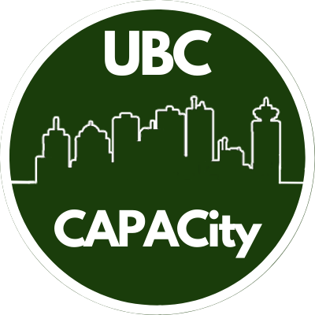

Open Source GIS

An Introductory Workshop
This workshop provides a short overview of how you can conduct spatial data analysis with QGIS and Python.
Learning Objectives
Import and inspect point (.csv format) and polygon (.shp format) data data in QGIS
Reproject a layer and conduct vector overlay
Normalize data and calculate a new field
Create a simple map.
Content Warning
We will be using a dataset that deals with a difficult and painful subject. It may be triggering to some, especially BIPOC individuals. We are going to use a dataset of police killings and police involved deaths in Canada. The intent behind choosing this dataset is to show that open source GIS, data analysis, and data visualization can be powerful tools for promoting social and environmental justice issues.
Why Police-Involved Deaths in Canada?
Racism is ingrained in the history of policing in Canada since the founding of the Royal Canadian Mounted Police (RCMP) in 1873. Police play a central tool in Canada’s ongoing genocide of Indigenous people and they work to maintain systems of oppression throughout in Canadian society. Canadian institutions rely on the lack of race based statistics and other demographic information to perpetuate a narrative that systemic racism is “just an American issue” and that Canada is “better”. As a white settler and immigrant from the United States, I fell for that narrative and did not question it for years.
* We need to have discussions about systemic racism in Canada and make it part of the public discourse in order to hold Canadian institutions accountable.
Cultural and Territorial Acknowledgement
The University of British Columbia and the city of Vancouver are on the traditional, ancestral, and unceded territory of the Coast Salish Peoples. Specifically the UBC Vancouver campus is on xʷməθkʷəy̓əm (Musqueam) land. However, Indigenous cultures tend not to have the rigid sense of territorial boundaries that define western nations. This is highlighted in the map below, which shows many overlapping territories in the covering this region.
- There are nearly 200 First Nations spread through BC, and many more across the continent.
- It is essential to recognize Indigenous territories and Indigenous sovereignty, especially within the context of GIS.
- To learn more about the Indigenous people, culture, and languages where you live and around the world, check out native-land.ca.
Why Do an Acknowledgement?
For centuries, settler societies have perpetuated a genocide against Indigenous people across the globe. In many ways this genocide is still ongoing here in British Columbia and across Canada. There has been concerted effort by the government, religious organizations, and educational institutions to erase Indigenous cultures and identity from both the land and the map. Historically, maps have been used as tools of oppression and we must work to de-colonize our practices in GIS.
- A land acknowledgement is one small way to help with that, but it cannot be treated as a formality. It is a time to reflect and build understanding.